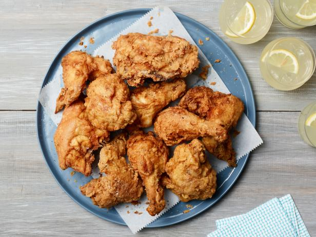

Learn how to make perfect Fried Chicken with the crispiest, most flavorful crunchy outside
with moist and juicy meat on the inside.

Ingredients
2 whole free-range eggs.
Vegetable oil of choice, for frying the chicken.
6 cups all-purpose flour.
5 tablespoons salt.
4 tablespoons ground black pepper.
2 tablespoons garlic powder.
1 tablespoon onion powder.
2 teaspoons cayenne pepper.
2 cups buttermilk.
Instructions
Cut the whole chickens into 4 breasts, 4 thighs, 4 legs and 4 wings and set aside.
Preheat your oil, in either a heavy pan on the stove or a deep-fryer, to 325 degrees F.
In a large bowl, combine the flour, salt, black pepper, garlic powder, onion powder
and cayenne pepper until thoroughly mixed. Set aside.
Pour the buttermilk into another bowl large enough for the chicken to be immersed in the buttermilk.
Prepare your dredging station. Place your chicken in a bowl. Next to that, your bowl of buttermilk,
and next to that, your dry mixture.
Take your breasts, lightly dust them with your flour mixture, then dip them in the buttermilk
until they are coated, and then place them in the flour mixture.
Take the breasts that are in the flour mixture and aggressively push the flour mixture
into the wet chicken. Make sure that the chicken in very thoroughly coated, or you will not achieve
the crust and crunch you are looking
Next, repeat the dredging steps with your other pieces of chicken in this order: thigh, leg then wing.
When you place the last wing into the fryer, you should have 16 pieces of chicken in the oil.
Set a timer for 15 minutes.
After 15 minutes, take a probe thermometer and check the temperature of a breast. If it reads 180 degrees F,
all of your chicken is done. (Keep in mind that it will continue to cook after it has been
removed from the fryer.)
Remove the chicken from the oil and let it drain for 5 minutes. Let cool for an additional
10 minutes before serving.